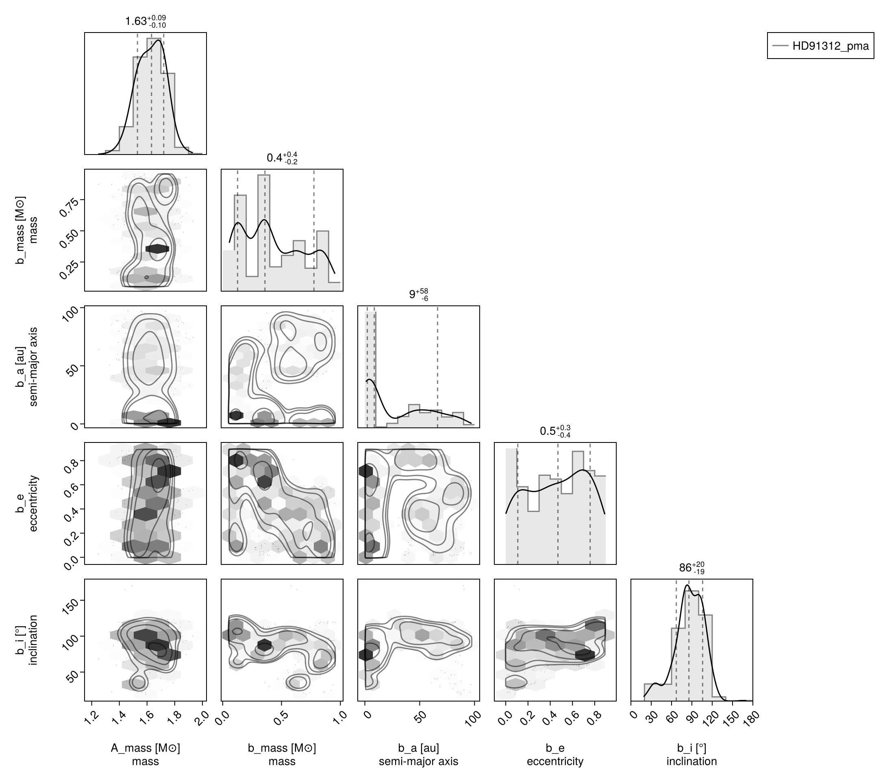
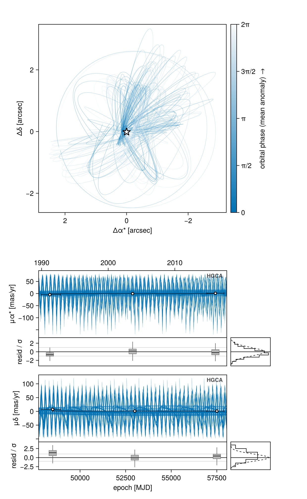
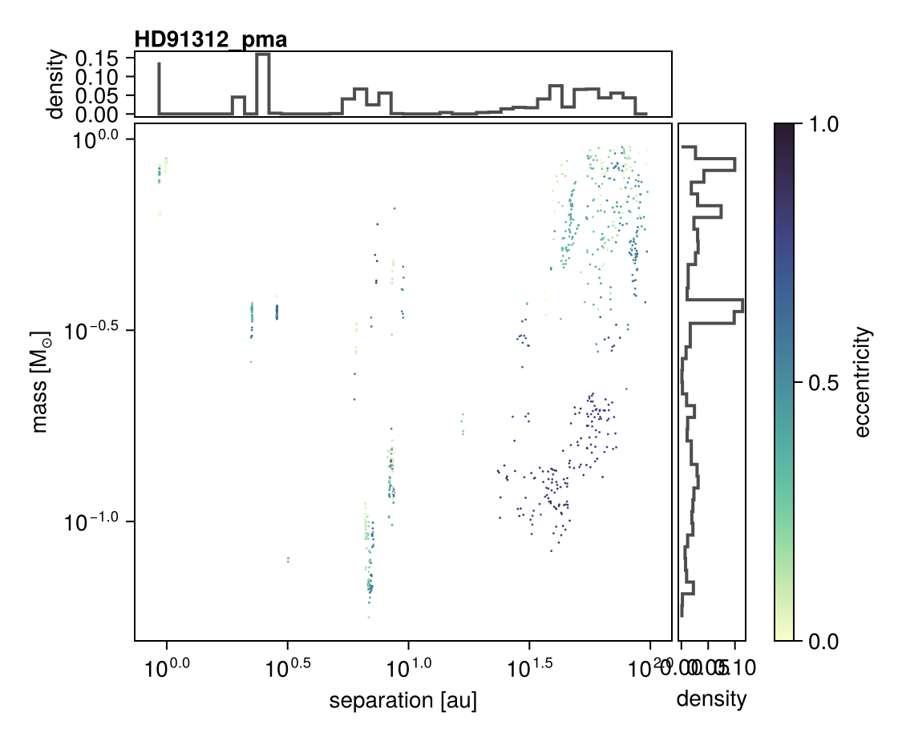

Fit Proper Motion Anomaly
Octofitter.jl supports fitting orbit models to astrometric motion in the form of GAIA-Hipparcos proper motion anomaly (HGCA; https://arxiv.org/abs/2105.11662). These data points are calculated by finding the difference between a long term proper motion of a star between the Hipparcos and GAIA catalogs, and their proper motion calculated within the windows of each catalog. This gives four data points that can constrain the dynamical mass & orbits of planetary companions (assuming we subtract out the net trend).
If your star of interest is in the HGCA, all you need is it's GAIA DR3 ID number. You can find this number by searching for your target on SIMBAD.
For this tutorial, we will examine the star and companion HD 91312 A & B discovered by SCExAO. We will use their published astrometry and proper motion anomaly extracted from the HGCA.
The first step is to find the GAIA source ID for your object. For HD 91312, SIMBAD tells us the GAIA DR3 ID is 756291174721509376.
The Gaia epoch selections are sampled parameters by default. We know what epochs and scan angles Gaia could possibly observe the target, and we know how many observations were ultimately included by the DR3 AGIS solution, but we don't know which subset of observations were actually used. When freeze_epochs=false (the default), we add a bunch of nuisance variables that let us marginalize over this uncertainty. Passing freeze_epochs=true fixes that selection and makes fitting dramatically faster, at the cost of an approximation–-good for quick docs examples.
Fitting Astrometric Motion Only
Initial setup:
using Octofitter, Distributions, RandomWe begin by finding orbits that are consistent with the astrometric motion. Later, we will add in relative astrometry to the fit from direct imaging to further constrain the planet's orbit and mass — see Astrometry, PMA, and RV.
The bodies
A = Body(
name="A",
variables=@variables begin
mass ~ truncated(Normal(1.61, 0.1), lower=0.1) # Msol
flux_G = 1.0 # the host sets the contrast scale in each band
flux_Hp = 1.0
end
)
planet_b = Body(
name="b",
about=A,
variables=@variables begin
mass ~ LogUniform(0.5mjup, 1000mjup) # Msol
a ~ LogUniform(0.1, 100.0) # au
e ~ Uniform(0, 0.9)
ω ~ Uniform(0, 2pi)
i ~ Sine() # the Sine() distribution is defined by Octofitter
Ω ~ Uniform(0, 2pi)
tp ~ Uniform(50000, 60000) # time of periastron [MJD]
flux_G = 0.0 # dark to Gaia…
flux_Hp = 0.0 # …and to Hipparcos
end
)flux_G and flux_Hp are the contrast ratios against the host (hence flux_G = 1.0 on A), and they are what the code uses to model the Gaia photocentre and to modulate the Hipparcos abscissa. A luminous, unresolved companion gets a real prior here — flux_G ~ Uniform(0, 1). If you ommit them, the companion is assumed to be dark.
Retrieving the HGCA
hgca_obs = HGCAObs(
gaia_id = 756291174721509376,
target = A,
blends = (planet_b,),
ref = Barycentre,
freeze_epochs = true, # fast but approximate; drop for a production fit
)G23HObs "HGCA" A (blended with b) vs Barycentre
Table with 6 columns and 6 rows:
epoch start_epoch stop_epoch pm σ_pm kind
┌───────────────────────────────────────────────────────────────
1 │ 48345.3 47878.5 48932.8 -141.885 0.576791 ra_hip
2 │ 48500.4 47878.5 48932.8 8.07173 0.375164 dec_hip
3 │ 52884.2 48345.3 57423.2 -137.653 0.0195449 ra_hg
4 │ 53001.6 48500.4 57503.1 1.88969 0.0126896 dec_hg
5 │ 57423.2 56949.9 57897.0 -136.291 0.153744 ra_dr3
6 │ 57503.1 56949.9 57897.0 1.77352 0.189044 dec_dr3
These are absolute measurements, so ref = Barycentre can look like it is claiming the barycentre stands still. It isn't. ref says which point the modelled offsets are measured from — here, the photocentre's wobble about the system's centre of mass. The barycentre's own motion across the sky is modelled separately, by the absolute frame in the system block just below (ra, dec, plx, pmra, pmdec, rv at ref_epoch). Those six are the barycentre's catalog quantities, and they are propagated rigorously in 3D, so the track carries perspective acceleration rather than being a straight line. The prediction is the sum: barycentre track + offset from the barycentre, with the annual parallax coming from the observation's parallax factors.
System Model & Specifying Proper Motion Anomaly
We specify priors on plx as usual, using the gaia_plx helper to read the parallax and uncertainty from the Gaia DR3 catalog by source ID.
We also add parameters for the star's long term proper motion. This is usually close to the long term trend between the Hipparcos and GAIA measurements. Use wide priors on pmra and pmdec because the data are going to constrain them.
sys = System(
name="HD91312_pma",
bodies=[A, planet_b],
observations=[hgca_obs],
variables=@variables begin
plx ~ gaia_plx(gaia_id=756291174721509376)
# Priors on the center of mass proper motion
pmra ~ Uniform(-137 - 100, -137 + 100)
pmdec ~ Uniform(2 - 100, 2 + 100)
# The rest of the absolute frame
ra = $hgca_obs.catalog.ra
dec = $hgca_obs.catalog.dec
rv = 0.0 # barycentre's RV in [m/s] used perspective acceleration correction etc.
ref_epoch = $(Octofitter.meta_gaia_DR3.ref_epoch_mjd)
end
)
model_pma = Octofitter.LogDensityModel(sys)LogDensityModel for System HD91312_pma of dimension 11 and 6 epochs with fields .ℓπcallback and .∇ℓπcallback
Sampling from the posterior (PMA only)
Because proper motion anomaly data is quite sparse, it can often produce multi-modal posteriors. If your orbit already has several relative astrometry or RV data points, this is less of an issue.
chain_pma, pt = octofit_pigeons(model_pma, n_rounds=10)
display(chain_pma)[ Info: Sampler running with multiple threads : true
[ Info: Likelihood evaluated with multiple threads: false
[ Info: [HD91312_pma] observing_geometry = true (user)
[ Info: [HD91312_pma] barycentric_lighttime = true (user)
[ Info: [HD91312_pma] observing_geometry = true (user)
[ Info: [HD91312_pma] barycentric_lighttime = true (user)
┌ Info: Starting values not provided for all parameters! Guessing starting point using global optimization:
│ num_params = 11
└ num_fixed = 0
┌ Warning: Pathfinder error: MethodError(copy, (SplittableRandoms.SplittableRandom(0x80e1ca0fe9484bfd, 0xaabf13ae126f9159),), 0x000000000000af18)
└ @ Octofitter ~/octo-maintenance/runner/actions-runner/_work/Octofitter.jl/Octofitter.jl/src/initialization.jl:944
┌ Warning: Using BBO result as fallback
└ @ Octofitter ~/octo-maintenance/runner/actions-runner/_work/Octofitter.jl/Octofitter.jl/src/initialization.jl:945
┌ Info: Found sample of initial positions
│ logpost_range = (-5.0421989319685165, -5.0421989319685165)
└ mean_logpost = -5.042198931968522
────────────────────────────────────────────────────────────────────────────────────────────────────────────────────────
scans restarts Λ Λ_var time(s) allc(B) log(Z₁/Z₀) min(α) mean(α) min(αₑ) mean(αₑ)
────────── ────────── ────────── ────────── ────────── ────────── ────────── ────────── ────────── ────────── ──────────
2 0 2.71 2.26 1.72 2.03e+09 -1.58e+04 0 0.84 1 1
4 0 2.95 5.14 1.29 3.64e+09 -1.64e+03 0 0.739 1 1
8 0 4.13 6.96 2.15 6.52e+09 -29.4 0 0.642 1 1
16 0 6.09 7.59 4.87 1.27e+10 -17.8 0 0.559 0.998 1
32 0 7.54 8.42 9.08 2.44e+10 -22.2 1.48e-102 0.485 1 1
64 0 7.88 4.24 18.9 5.1e+10 77.1 3.19e-18 0.609 1 1
128 0 7.88 5.68 41.2 1.05e+11 -29.6 0.0048 0.562 1 1
256 5 8.24 5.67 82 2.12e+11 -27.9 2.6e-05 0.551 1 1
512 12 8.69 5.87 150 4.09e+11 -25.3 0.0241 0.53 1 1
1.02e+03 26 9.06 5.88 281 7.93e+11 -24.1 0.0786 0.518 1 1
────────────────────────────────────────────────────────────────────────────────────────────────────────────────────────Analysis
The first step is to look at the table output above generated by MCMCChains.jl. The rhat column gives a convergence measure. Each parameter should have an rhat very close to 1.000. If not, you may need to run the model for more iterations or tweak the parameterization of the model to improve sampling. The ess column gives an estimate of the effective sample size. The mean and std columns give the mean and standard deviation of each parameter.
The second table summarizes the 2.5, 25, 50, 75, and 97.5 percentiles of each parameter in the model.
Pair Plot
If we wish to examine the covariance between parameters in more detail, we can construct a pair-plot (aka. corner plot).
# Create a corner plot / pair plot.
# We can access any property from the chain specified in Variables
using CairoMakie: Makie
using PairPlots
octocorner(model_pma, chain_pma, small=true)
Proper Motion Panels
G23HObs declares pmra and pmdec plot channels, so octoplot draws the five catalog proper motions — Hipparcos, Hipparcos–Gaia, DR2, DR3−DR2 and DR3 — against the model's reflex proper-motion curve, with a residual strip below each:
octoplot(model_pma, chain_pma)
The horizontal bar on each point is its averaging window, not an epoch uncertainty: a catalog proper motion is a value computed over a full mission span.
Posterior Mass vs. Semi-Major Axis
Given that this posterior is quite unconstrained, it is useful to make a simplified plot marginalizing over all orbital parameters besides separation. dotplot is that summary — mass against separation (or period, with mode=:period), coloured by eccentricity, with marginal histograms:
Octofitter.dotplot(model_pma, chain_pma)
See Also
- Astrometry, PMA, and RV — the same target with relative astrometry and radial velocities added, plus a model comparison across data subsets.
- Joint Gaia-Hipparcos (G23H) — the full channel set this page restricts.
- Hipparcos IAD — the Hipparcos abscissae on their own.